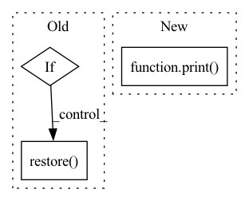

Pattern ID :15615
Before Change
if self.ema is not None:
self.ema.apply_shadow()
outputs = self._network(X)
if self.ema is not None:
self.ema.restore()
return outputs
def predict(self,X=None):After Change
outputs = self._network(X)
if torch.isnan(outputs).any().tolist():
print("outputs")
print( outputs)
// if self.ema is not None:
// self.ema.restore()
return outputs
In pattern: SUPERPATTERN
Frequency: 3
Non-data size: 3
Instances Fragment ID: 52834326
Project Name: ygzwqzd/lamda-ssl
Commit Name: 632c8ded6761c4af89695765b07f71752bcd6139
Time: 2022-01-20
Author: 1129198222@qq.com
File Name: Semi_sklearn/Model/MeanTeacher.py
M Class Name: MeanTeacher
N Class Name: MeanTeacher
M Method Name: estimate(2)
N Method Name: estimate(2)
M Parent Class: SemiDeepModelMixin,InductiveEstimator
N Parent Class: SemiDeepModelMixin,InductiveEstimator
M File Name: Semi_sklearn/Model/MeanTeacher.py
N File Name: Semi_sklearn/Model/MeanTeacher.py
M Start Line: 122
M End Line: 127
N Start Line: 135
N End Line: 141
Before Change
// path.download()
// print(path)
if self.initialized: // use run directory
wb.restore( self.checkpoint_filename(), run_path=self.cloud_path())
to_path = self.local_path()
else:
wb.restore(self.checkpoint_filename(), run_path=self.cloud_path(), replace=True, root=to_path)
// TODO think about deleting loaded fileAfter Change
// TODO relax requirements after fix of https://github.com/wandb/client/issues/1147
try:
artifact_path = self.checkpoint_artifactname(version=version)
print( "Requesting checkpoint artifacts {}".format(artifact_path))
artifact = wb.run.use_artifact(artifact_path)
filepath = artifact.download(str(to_path))
Fragment ID: 52834322
Project Name: maria-korosteleva/garment-pattern-estimation
Commit Name: a68af3a4c1cce6488b703255f04cababe20de9ea
Time: 2020-07-08
Author: mariako@kaist.ac.kr
File Name: nn/experiment.py
M Class Name: WandbRunWrappper
N Class Name: WandbRunWrappper
M Method Name: load_checkpoint_file(3)
N Method Name: load_checkpoint_file(3)
M Parent Class: object
N Parent Class: object
M File Name: nn/experiment.py
N File Name: nn/experiment.py
M Start Line: 134
M End Line: 161
N Start Line: 141
N End Line: 157
Before Change
print(self.resume)
wb.init(name=self.run_name, project=self.project, config=self.setup, resume=self.resume)
if wb.run.resumed:
// restore last checkpoint
wb.restore( self.checkpoint_filename)
checkpoint = torch.load(Path(wb.run.dir) / self.checkpoint_filename)
model.load_state_dict(checkpoint["model_state_dict"])
self.optimizer.load_state_dict(checkpoint["optimizer_state_dict"])
start_epoch = checkpoint["epoch"] + 1After Change
if wb.run.resumed:
start_epoch = self._restore_run(model)
print( "Trainer: Resumed run {} ({}) from epoch {}".format(self.run_name, self.resume_run_id, start_epoch))
else:
start_epoch = 0
wb.watch(model, log="all") Fragment ID: 52834319
Project Name: maria-korosteleva/garment-pattern-estimation
Commit Name: 7a24f9572ffda8ad60bdfcf8024bf9af9145e119
Time: 2020-06-17
Author: mariako@kaist.ac.kr
File Name: nn/trainer.py
M Class Name: Trainer
N Class Name: Trainer
M Method Name: _init_wb_run(2)
N Method Name: _init_wb_run(2)
M Parent Class:
N Parent Class:
M File Name: nn/trainer.py
N File Name: nn/trainer.py
M Start Line: 96
M End Line: 115
N Start Line: 100
N End Line: 107